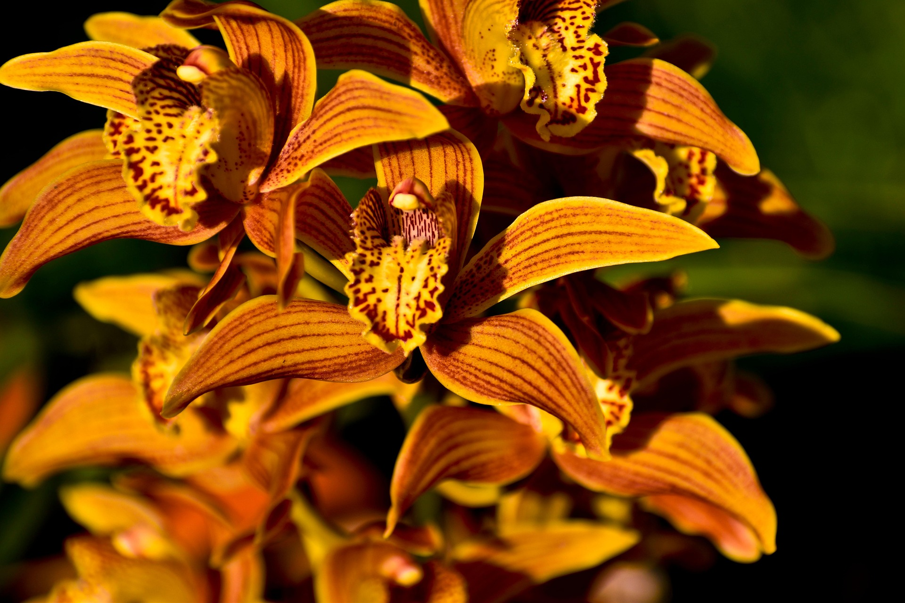
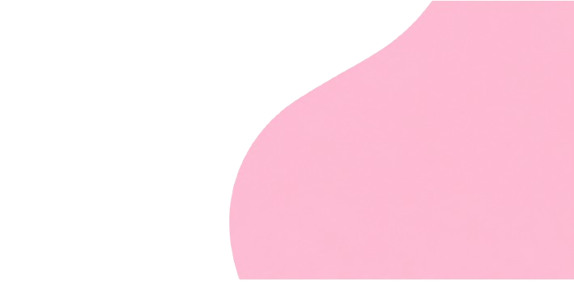
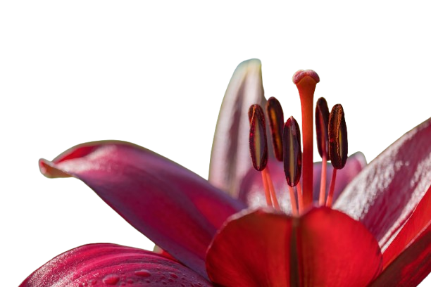
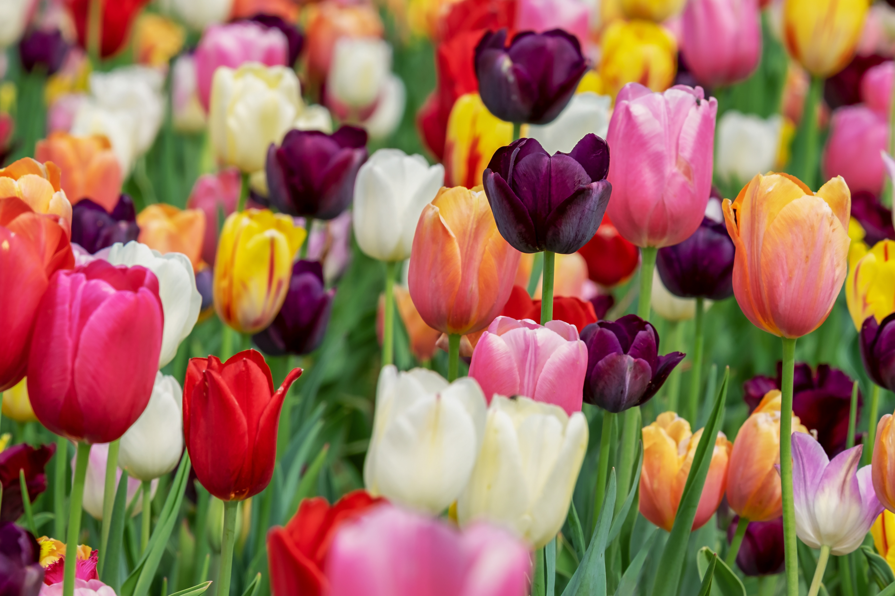
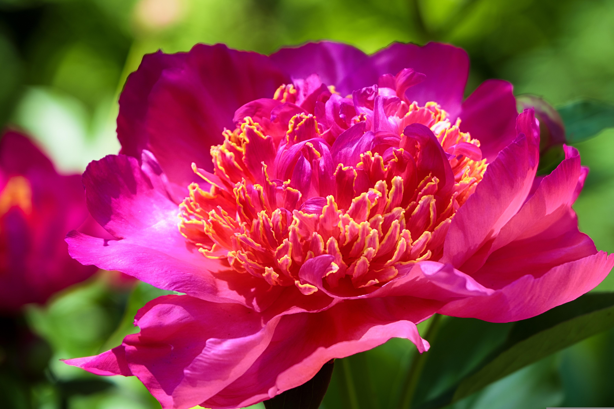

Orquideas
Beleza sofisticada e grande variedade de formas e cores.

Descubra espécies ornamentais, exoticas e delicadas para jardim, colecao e estudo botanico em uma experiencia visual leve e elegante.
Saiba mais

Conheça novas espécies
Espécies de destaque para colecionadores

Beleza sofisticada e grande variedade de formas e cores.

Petalas simetricas e cores vivas para composicoes marcantes.

Volumes exuberantes e perfume delicado para jardins nobres.
Conheça espécies raras de flores

Pertencente à família do feijão e da ervilha, a Jade Vine é uma das flores mais raras do mundo, apresentando um belo formato, que lembra o de garras, podendo atingir até 3 metros de comprimento.
A altura final da planta pode chegar a 20 metros, tornando-a própria para servir como ornamento de grandes estruturas, embelezando o ambiente mesmo fora do seu período de florescimento.
Saiba maisEssa você não conhece!
Você já se perguntou como é a flor mais rara do mundo? Conheça a Camélia Vermelha Middlemist, uma flor tão rara que existem apenas dois exemplares conhecidos em todo o planeta. Sim, apenas dois!
O que surpreende é que, apesar do nome, a Middlemist “Red” não é realmente vermelha. Em vez disso, floresce num belo rosa profundo, semelhante a uma rosa, rodeada por folhas verdejantes.
Saiba mais
Substratos leves e ricos em materia organica favorecem a floracao e reduzem riscos de apodrecimento das raizes.
O posicionamento correto define vigor, abertura das flores e intensidade das cores ao longo das estacoes.
O excesso de agua compromete diversas especies. A observacao do solo e parte essencial do cuidado diario.
Especialistas em botanica ornamental
Quem orienta nosso acervo floral
Pesquisadora em flora tropical e conservacao de especies raras.
Consultor em horticultura, estufas e manejo de flores nobres.